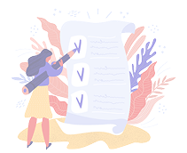

کوئرا لیست
سلام، رویا
امروز،سهشنبه،5 بهمن 1402
تسکهای امروز
تسکی برای امروز نداری!
افزودن وظیفه جدید

چه کارهایی امروز برای انجام داری؟
میتونی الان تسکهاتو اینجا بنویسی و برنامه ریزی رو شروع کنی!تگها
پایین
متوسط
بالا
پایین
متوسط
بالا
تسکهای انجام شده
3 تسک انجام شده است.